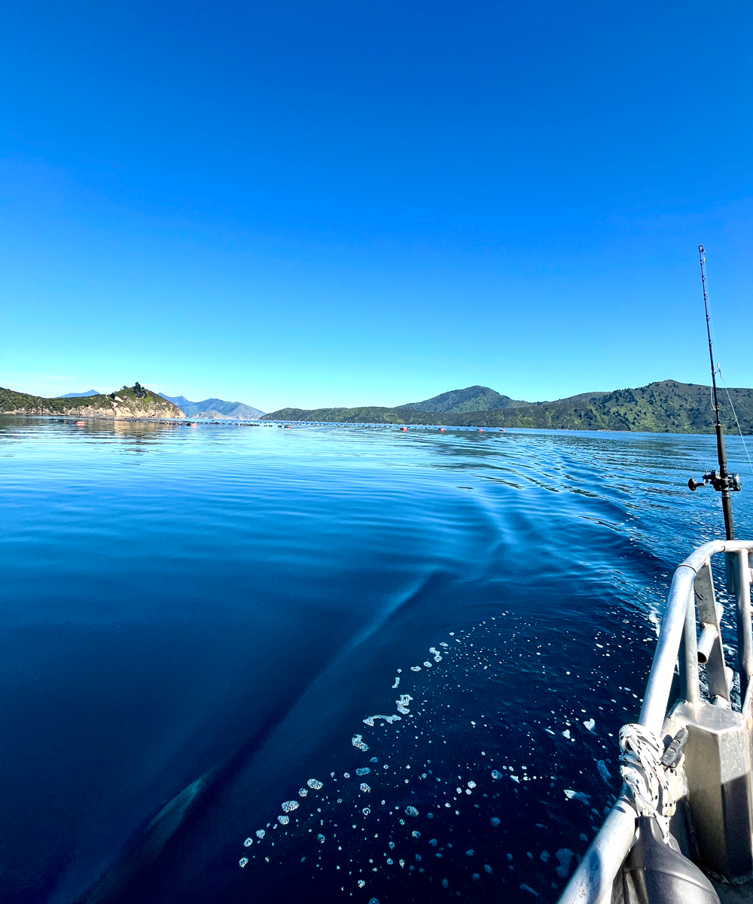

My Website - Single Item
Below, is the Single Item.
Below, is the Single Item.

There is nothing better than a sunny day out on the boat, cruising around the Marlborough Sounds with nowhere in particular to be. The water stretched out in every shade of blue, with green hills wrapping around the little bays. I spent most of the time looking around, trying to take it all in, and wondering how somewhere so beautiful could be right here in New Zealand. The wind was blowing through my hair, the sun was warming my skin, and every bay we passed made me want to stop and stay a little longer. We cruised around, explored the coastline and enjoyed being out on the water without having to worry about what came next. I think those are the days I love most when travelling. Nothing fancy, no big plans, just good company, a bit of sunshine and somewhere beautiful to explore. It's easy to get caught up in everyday life and forget to appreciate what's right in front of you, but out there on the water, I didn't want the day to end.